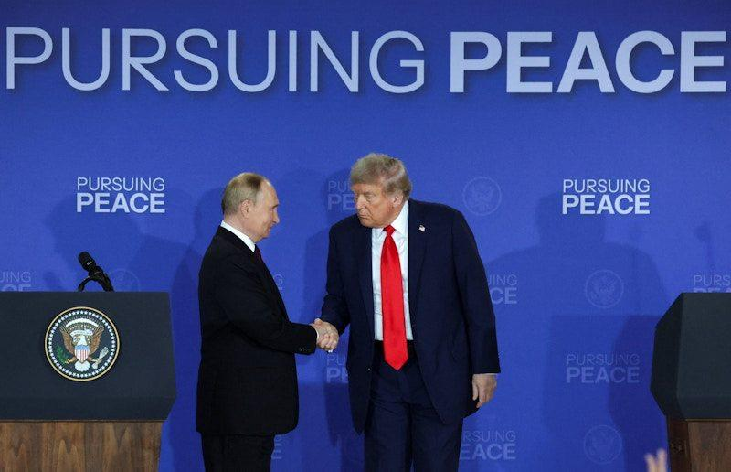

世界苦茶08月16日新闻 | 35条 | 川普會暫無有意義結果

川普會暫無有意義結果 | 中國七月新房價格繼續下跌 | 中國批判日本終戰80週年態度 | 中國通報中日友好醫院事件
每日三條新聞解析
苦茶数据
美元兑人民币：7.18（昨日7.18，前日7.17）
美元兑日元：146.85（昨日147.01，前日146.41）
上证指数：休市（昨日3696，前日3685）
标普500指数：休市（昨日6449，前日6458）
比特币：117899（昨日118133，前日121989）
布伦特原油：65.85（昨日66.15，前日65.98）
中国新闻
• 悉尼车祸案华人女子首提审 ：此前在澳大利亚悉尼富人区玫瑰湾涉及一场交通事故的杨兰兰面临两项指控，分别是因不当行为驾驶机动车造成身体伤害，以及拒绝或未能接受呼气酒精分析。据“中国新闻周刊”微信公众号的消息，杨兰兰的案子星期五在悉尼唐宁中心地方法院首次提审。现场迎来了约百名当地华人围观，但法庭座位有限，只有少数人得以入内旁听。杨兰兰通过视频连线短暂出庭，她身着黑色西装外套，佩戴同色系帽子。
• 台湾网红馆长再赞大陆科技 ：继6月首次赴中国大陆后，台湾网红“馆长”星期四再次开直播分享其这次的深圳之旅。他参观了当地研发机械人的企业后，大赞中国大陆科技是世界第一。综合台湾ETToday和港媒星岛头条网报道，馆长星期二到访深圳，展开第二次赴陆之旅。他在星期四的直播中说，自己是冲着深圳“中国科技制度”的美誉而来，并直言，台湾以前也号称科技之都，但30年来没有改变。馆长当天参访了腾讯，并体验小马智行等科技企业，以及深圳发展尖端机械人的星尘智能。他见厂商展示机械人如人类般的行动力后，大赞说，“这就是中国科技，中国骄傲！” “中国人，就是世界第一，未来你等着看，真的。”
• 中国通报“董小姐事件”问责 ：中国官方通报，已对涉及4月份“董小姐事件”的19名责任人员和五机构进行严肃追责问责。今年4月，中国知名的北京中日友好医院陷入桃色风波，医院胸外科副主任医师肖飞被妻子举报婚内出轨多人。其中一名婚外情对象董袭莹的工作和求学经历引发特权操作质疑，掀起舆论风暴。据央视新闻报道，中国国家卫生健康委员会调查小组星期五通报，已依据《中国共产党纪律处分条例》《中国共产党问责条例》等有关规定，对19名有关责任人员和五所机构进行严肃追责问责。
• 无人机坠落致成昆铁路中断 ：中国铁路局通报，一架无人机涉严重违法飞行行为，导致成昆铁路运输中断逾四小时。肇事者和其公司已被处罚。据中国高铁招募中心官网星期四引述西昌铁路公安处峨眉车站派出所通报，驭风云途智能装备有限公司的三名员工6月30日晚上8时许，在乐山市沙湾区美女峰景区违规进行载重无人机试飞实验。过程中，无人机因操作不当而失控，最终坠落至成昆铁路沙湾段桥梁上。
• 南京大屠杀纪念馆首纳外籍传承人 ：今年是第二次世界大战和中国抗日战争胜利80周年。侵华日军南京大屠杀遇难同胞纪念馆首次将外国人纳入南京大屠杀历史记忆传承人的行列中。据央视新闻报道，侵华日军南京大屠杀遇难同胞纪念馆星期五举行第四批历史记忆传承人上岗仪式，共有六人被纳入行列，使队伍总人数增至38人。星期五新增的六人，包括了梅根・布莱迪，以及托马斯・拉贝，是南京大屠杀历史记忆传承人行列首度纳入国际友人。报道指，不同历史背景的传承人带来各具特色的视角，助力传播跨文化历史认知与和平共识，为铭记历史、传播和平注入生生不息的力量。
• 蒋万安9月将率团赴上海 ：台湾媒体报道，台北市长蒋万安预计将于9月下旬率团赴上海参加双城论坛。综合台湾联合新闻网和风传媒等报道，双城论坛今年迈入第16年，是蒋万安市长任内第三次参加。他第一次带团赴上海出席，第二次以东道主身份承办，这次轮到台北市政府前往上海与会。报道引述知情人士称，台北市政府官员7月初已低调前往上海踩点。虽然台北市议会议长戴锡钦率团9月出访欧洲，直到9月25日才返台，但双方初步沟通后，认为戴锡钦一行可在9月25日直接转往大陆，加上台北市议会10月初要开会，因此9月25日是最佳时间。
• 传孙海燕被扣留消息不实 ：外传中共中央对外联络部副部长孙海燕被官方带走扣留，但根据《联合早报》从可靠消息了解，孙海燕目前正常上班。较早时，美国《华尔街日报》引述不具名知情人士称，中共中央对外联络部部长刘建超7月底从海外出差返回北京后，被官方带走问话。刘建超是下一任中国外长的热门人选之一，他被带走的消息引起广泛关注。路透社今天引述三位消息人士称，孙海燕也于刘建超被带走的差不多同时，于8月初被带走问话扣留。
• 王毅批日本歪曲侵略历史 ：星期五是日本宣布无条件投降80周年，中国外长王毅当天批评日本一些势力时至今日仍试图美化否认侵略、歪曲篡改历史，甚至为当年的战争罪犯翻案招魂，并指这一行径令是对联合国宪章、战后国际秩序的挑战。王毅并敦促日本作出正确的选择，防止再误入歧途。据日本共同社报道，日本农林水产部长小泉进次郎星期五参拜了靖国神社。这是去年10月石破内阁上台以来，首次确认有阁员参拜，也是连续六年有阁员在8月15日进行参拜。小泉进次郎是日本前首相小泉纯一郎之子。小泉纯一郎2001年至2006年担任首相期间，曾连续六年六次参拜靖国神社，导致中日关系一度陷入冰点。
• 《人民日报》刊文促正视历史 ：中共中央机关报《人民日报》发表文章，指地区国家和国际社会关切日本能否深刻反省战争罪责。《人民日报》星期五刊发题为《坚持正确历史观，才是对历史、对人民、对未来负责》、署名“钟声”的文章，提出上述观点。文章指出，1945年8月15日，日本宣布无条件投降，中国人民同世界进步力量一道，打败了日本军国主义侵略者和法西斯主义，以鲜血和生命赢得了伟大胜利。人类应该永远铭记第二次世界大战悲剧及其原因和教训，尽一切努力阻止类似悲剧重演。
• 中驻韩大使赞李在明反歧视言论 ：中国驻韩国大使戴兵在社交平台发文，对韩国总统李在明谴责反华示威表示赞赏。戴兵星期四在X平台上写道，他注意到韩方日前举行国务会议时，强调要采取积极措施防止针对外国人的歧视和暴力行为，其中提到有关涉华游行问题。他对韩方高层予以重视并将采取措施表示赞赏。戴兵说，当前国际形势变乱交织，中韩加强友好合作符合双方利益，也是两国人民的共同期待。少数势力借政治谎言企图抹黑中国，相信中韩两国民众都能明辨是非。希望早日解决此类问题，期待中韩关系更好发展。
• 港府暂停违规学校办学资格 ：不少中国大陆民众近年申请成为香港人后，子女仍在大陆读书。有大陆机构涉嫌向香港私校“借壳办学”，让这些大陆学生也能享受香港本地生的福利，引起港人不满，香港特区政府回应称已暂停一些学校的营办资格。港府过去几年推出多项计划，吸引中国大陆及海外人才移居香港，推动经济发展。有些成功获批来港的大陆家长，子女仍留在大陆生活和读书，却同时享受香港各种本地生的福利，包括以自修生身份参加香港高考，并因此更容易入读陆港两地大学。香港教育局提供的数据显示，有“新港人”的子女从未在港生活，但以自修生名义应考DSE，并以本地生身份申请入读获官方资助的香港高校，有关人数由2021/22学年的约200人，急速上升至上学年约1000人。
亚太印太新闻
• 韩国对日好感创近年高点 ：韩国盖洛普最新公布的民调结果显示，近四成韩国民众对日本持好感态度，比率逼近2011年311大地震时期创下的历史最高水平。韩联社报道，调查于8月12日至14日通过无线电话在全国范围内对1007名18岁及以上成年人进行，并在星期五发布民调结果。数据显示，38%的受访者表示“对日本有好感”，较2022年8月的21%上升17个百分点，接近2011年日本大地震后的历史高点，约41%。
• 印控克什米尔山洪致逾六十死 ：印度媒体报道，印控克什米尔地区星期四遭遇暴雨，随之引发的山洪冲毁多座建筑，已造成至少60人丧生、逾200人失踪。救援人员星期五动用铁锹和挖掘机，在巨石与废墟中搜寻幸存者。灾害发生在查索蒂村，当时大批朝圣者正在用餐，准备徒步前往喜马拉雅高海拔宗教圣地马柴尔玛塔庙。这是喜马拉雅山区在一周多时间内发生的第二起类似灾难。受伤朝圣者夏尔马回忆道：“我们听到一声巨响，随即洪水和泥浆倾泻而下。人们惊叫，有人被冲入切纳布河，另一些人被埋在废墟中。”
• 北海道棕熊袭击登山客失踪 ：日本北部发生棕熊袭击事件，一名年轻登山客被拖入森林，失踪已超过一天。据《读卖新闻》等媒体报道，这名20多岁的男子于星期四上午在北海道东北部罗臼山登山步道行走时，遭一头野生棕熊袭击。男子曾试图反击，但仍被体型巨大的棕熊拖入附近树林，双腿大量出血。现场附近发现一个装有写有其姓名卡片的钱包。警方星期五又找到一件疑似属于他的、破损且沾满血迹的衬衫，周围树木与土壤上可见血迹。警方还在现场发现了一只手表、一顶帽子及疑似防狼喷雾的物品。
• 韩国官员斥台方取消会晤失礼 ：韩国真相和解委员会委员长朴宣映在社交平台发文，斥责台湾代表团临时取消会晤，指这是外交失礼行为。台湾外交部长林佳龙受询时说，已让驻韩代表拜访致歉。朴宣映星期一在脸书发文提出上述指责，当时率团的台湾行政院政务委员林明昕星期二发布声明指出，上星期五上午9时临时有APEC相关紧急事项必须立即处理，无法参与同日9时30分的交流会议，因此在前一日傍晚告知会面单位，并表达歉意，也请对方谅解。综合三立新闻网和联合新闻网报道，林佳龙星期四赴立法院报告并备询。他在立法院受访回应称，他在事发后已责成驻韩代表丘高伟亲自拜访韩国官员，并表达歉意。经过沟通后，对方也表示理解，双方也将对未来的交流继续保持联系。
• 莫迪独立日提自给承诺护农 ：在印度和美国关系紧张之际，印度总理莫迪在星期五印度独立日呼吁人民强化自给自足，并承诺会保护农民。路透社报道，莫迪在印度独立日向全国发表讲话时说，无论是化肥、喷气发动机或电动车电池，所有产品都要实现本土制造，他也誓言会保护农民。新德里正面对美国总统特朗普祭出的惩罚性关税，双方贸易谈判破裂，很大原因是两国在美国农产品和乳制品进口问题上存在分歧。
• 赖清德表示，团结必胜侵略必败 ：台湾总统赖清德在第二次世界大战日本宣布投降80周年纪念日发文，提出团结必胜、侵略必败。赖清德星期五在脸书写道：“二战是历史的浩劫，只因为少数独裁者个人的霸权野心、极端意识型态与军国扩张，就让横跨几大洲的许多国家，都卷入无情的战火。”他认为，二战最宝贵的教训是团结必胜、侵略必败，无论任何借口或理由，没有一个政权有权利去侵略、剥夺另一块土地上人们的自由和幸福，“而热爱自由、珍视和平的国家，更必须团结起来，以无可挑战的决心和实力，挫折任何扩张、侵略的野心”。
• 金与正再批韩政府缓和举措 ：朝鲜领导人金正恩的胞妹、劳动党副部长金与正再发表谈话，贬低韩国李在明新政府上台以来采取旨在缓和韩朝紧张局势的措施，表明对韩敌对姿态未变。金与正星期四通过朝中社发表题为《首尔的企盼不过是一场白日梦》的谈话，猛烈抨击韩国政府近期拆除边境扩音器、暂停心理战广播、推迟韩美联合军演等一系列举措，强调“我们毫不在意”。她也否认朝鲜拆除扩音器的说法，称“从未拆除过，也无意撤除”，反指韩方言论是“单方面臆测与炒作”。她进一步说：“无论韩国如何改变前朝政策，朝鲜都无意改善与美国走狗——韩国的关系。”她并主张应将这一敌对立场“制度化”，永久写入国家宪法，称韩国是“在朝鲜认知中最具威胁性的势力”，不再是统一对象，而是对等敌国。
科技新闻
• 纽约时报曝SpaceX几乎免税 ：根据纽约时报查阅的公司内部文件，自2002年成立以来，SpaceX很可能几乎没缴过联邦所得税，而且该公司私下告诉投资者，其未来可能永远都不需要缴这种税。由于该公司没有公开上市，它的财务状况一直处于保密状态。但纽约时报查阅的文件显示，SpaceX能够利用一项合法税收优惠：用其2021年底前累积的逾50亿美元亏损来抵消未来应税收入。这项税收优惠原本存在有效期限制，但是特朗普2017年在其首个总统任期内修改了政策，取消了所有企业享受该优惠的截止期限。对 SpaceX 而言，这意味着其近30亿美元的亏损可无限期用于抵扣未来应税收入。
• GPT-5企业市场获好评 ：备受期待的OpenAI最新旗舰大模型GPT-5终于发布，然而它在普通消费者群体中却反响平平。但对OpenAI CEO奥尔特曼来说，好消息是，他的大模型在利润丰厚的企业市场备受好评。上线仅1周时间，Cursor、Vercel和Factory等创业公司已宣布将GPT-5设为部分关键产品和工具的默认模型，并盛赞其部署更快捷、复杂任务表现更优且价格更低。多家企业表示，在Anthropic占据优势的代码和界面设计方面，GPT-5如今已能与Claude大模型平分秋色甚至更胜一筹。企业客户Box正在逻辑密集型长文档场景中测试GPT-5，其CEO亚伦·莱维表示，该模型是一项 “突破”，其推理能力达到了此前系统无法匹敌的水平。
财经新闻
• 瑞士二季度经济放缓 ：瑞士经济在第二季度明显放缓，原因是企业在美国大幅加征关税前的抢出口潮退去后，出口出现下滑。法新社报道，瑞士官方星期五公布数据显示，这一高度依赖出口的经济体在4月至6月环比仅增长0.1%，远低于第一季度的0.8%。瑞士经济部在声明中说，工业领域的疲弱表现部分被服务业增长所抵消。
• 特朗普拟加征钢铁及芯片关税 ：美国总统特朗普表明，将于下周对进口钢铁征收关税，并在随后的下一周对半导体晶片加征关税。路透社报道，特朗普星期五在飞往阿拉斯加与俄罗斯总统普京会晤途中对记者说，关税税率初期将设定较低水平，以便企业进入美国市场并扩大本土制造产能，随后将逐步上调。不过，特朗普并未透露具体税率。
• 中国起诉加拿大钢铁关税 ：中国官方通报，加拿大对中国钢铁加征关税，中国向世界贸易组织提起诉讼。中国商务部星期五在官网通报，中国当天在世贸组织起诉加拿大钢铁等产品进口限制措施。中国商务部称，加方无视世贸组织规则，出台钢铁关税配额措施，并对含“中国钢铁成分”等产品加征歧视性关税，是典型的单边主义和贸易保护主义做法，损害中方合法权益，扰乱全球钢铁等产业链供应链稳定。中方对此强烈不满，坚决反对。
• 中国7月新房价格继续下跌 ：中国官方数据显示，中国7月新房售价环比下降，同比降幅收窄。中国国家统计局星期五在官网发布的最新数据显示，中国7月一线城市新房售价环比下降0.2%，降幅比上月收窄0.1个百分点。其中，北京持平，上海上涨0.3%，广州和深圳分别下降0.3%和0.6%。根据数据，中国7月二线城市新房售价环比下降0.4%，降幅扩大0.2个百分点。三线城市新建商品住宅售价环比下降0.3%，降幅与上月相同。
• 应用材料业绩展望不及预期 ：美国最大晶片设备生产商应用材料本财季销售和利润展望令人失望，再度引发对于美中贸易争端正在抑制需求的担忧。该公司股价盘后大跌13％。据彭博社、路透社等报道，应用材料星期四公布最新业绩展望，预计截至10月底的财季营收约为67亿美元，远低于分析师平均预估的73.2亿美元。公司预计剔除部分项目后每股收益为2.11美元，也低于分析师预估的2.38美元。
• 长和集团港口交易难年内完成 ：香港长和集团星期四称，港口交易已进入新阶段，相信有机会达成满足各方监管的交易，但由于交易的规模及复杂性，相信难以在今年内完成交割。综合香港《明报》和《星岛日报》报道，集团联席董事总经理兼集团财务董事陆法兰，当天在中期业绩分析员会议上说，出售港口业务的交易对不同国家的监管机构均有不同的考量，集团早前已重申在未获得所有相关监管机构及部门批准前是不会进行任何交易，而交易已进入新阶段，包括与中国大陆一家主要战略投资者进行讨论。陆法兰深信，有关的讨论有可能会达成对所有相关方都有好处的交易，希望交易能够获得所有相关监管机构及部门批准。
• 中企转向印尼避美高关税 ：为规避美国高额进口关税，中国企业纷纷把目光投向印度尼西亚，寻求在这个东南亚最大经济体发展业务。上个月，美国与印尼达成协议，对印尼进口商品征收19%关税，远低于对中国超过30%的关税。印尼的税率与马来西亚、菲律宾和泰国相同，略低于越南的20%。尽管和区域国家相比，印尼在税率上没有特别优势，但作为东南亚人口大国，庞大的消费市场潜力使印尼比邻国具备更大优势。
• 巴菲特二季度再减持苹果 ：沃伦·巴菲特旗下伯克希尔·哈撒韦在第二季度恢复抛售苹果公司股票，减持股份价值超40亿美元，这位亿万富翁投资者继续缩减其最赚钱的交易之一。伯克希尔披露在四月至六月份间出售了2000万股，将持股降至 2.8亿股，持仓价值为574亿美元。这是自2024年第三季度以来伯克希尔的首次减持；在此前的一轮抛售中，巴菲特将该公司在苹果公司的持股削减了逾三分之二。第二季度的减持为伯克希尔带来了42亿美元的投资收益。伯克希尔表示，其在此期间支出了39亿美元购买股票，增持了石油巨头雪佛龙、达美乐比萨以及Constellation Brands。
• 奔驰在华月销5年来首次跌破2.7万辆： 德国车企奔驰在2025年上半年在华销量同比大幅下跌14%后，下半年开局迎来了更严峻的挑战。懂车帝发布的数据显示，奔驰七月在中国市场的零售量达26653辆，环比下降超过了40%，这是近5年来奔驰月销量首次跌破2.7万辆。同时，近3年来，该品牌第二低的月销量为3.6万辆，比刚刚过去的七月也要多卖出超过9000辆。以奔驰为代表的豪华车企正在面临转型挑战。从纯电动汽车领域来看，豪华品牌过去多年来在燃油车领域的品牌溢价并没有传导至电动车产品。奔驰计划在 2027 年推出36款新车型，其中17款为电动车型，并宣布将推出7款中国专属车型。
俄乌战争
• 特朗普与普京结束会晤，双方积极评价但尚未达成协议： 在结束约3个小时的会晤后，普京称会晤在“建设性和相互尊重的气氛中”进行，“非常彻底和有益”，“特朗普显然关心他国家的繁荣。但理解俄罗斯有自己的利益”。普京重申需“消除冲突的主要原因”，以持久解决俄乌冲突。普京同意特朗普所说的“乌克兰的安全也应该得到保障”，表示俄罗斯准备为此努力。他警告欧洲不要“破坏刚出现的进展”。普京还迎合特朗普一直以来的说法，如果特朗普在2022年担任总统，俄乌战争就不会爆发。特朗普称会谈“非常富有成效”，取得了“一些重大进展”，达成了许多共识，虽然有些事情仍有待决定，“其中一个可能是最重要的”，但双方有“非常好的机会”取得进一步进展。他将向北约以及乌克兰领导人通报会晤情况。协议“最终”取决于他们，他们将不得不同意。双方未回答记者提问。在即将结束时，特朗普称“我们很快就会和你说话，可能很快就会再见到你”，普京用英语回应说“下次在莫斯科”。《生意人报》报道，普京在峰会结束后向二战期间在阿拉斯加阵亡的苏联飞行员墓地献花。
• 特普会前市场押注乌停火 ：美国总统特朗普与俄罗斯总统普京在阿拉斯加会晤进入倒计时，全球市场已提前押注乌克兰停火及对俄制裁放松的可能性，乌克兰债券、涉重建企业及在俄有业务的欧洲银行股纷纷上涨，欧洲股市整体走强。分析人士认为，这场会晤或成为乌克兰战争迈向收尾的重要信号。彭博社报道，会晤前夕，投资者涌入那些或因乌克兰停火、对俄制裁放松而受益的资产：乌克兰政府债券上涨，涉乌重建的企业股票及在俄仍有业务的欧洲银行股走高，欧洲股市整体亦受到提振。今年以来，欧洲市场表现领先，德国财政支出改善了区域经济前景。咨询公司TS Lombard董事总经理格兰维尔指出，无论表面结果如何，阿拉斯加峰会都将是乌克兰战争进入最后阶段的明确信号；短期市场或有波动，但局势缓和将强化欧洲投资逻辑。
• 乌无人机袭俄多地致死伤 ：俄罗斯库尔斯克州代理州长欣施泰因星期五在社媒平台发文说，当天凌晨，一架乌克兰军方无人机袭击了库尔斯克州热列兹诺多罗日内区一栋多层居民楼，导致居民楼发生火灾，造成一人死亡、10人受伤，其中一名伤者伤势严重。欣施泰因说，伤者已得到救治，目前消防员正在灭火，天亮后有关部门将对居民楼受损情况进行核验。他提醒居民不要接近坠落地面的无人机残骸。俄罗斯罗斯托夫州代理州长斯柳萨里在社媒平台说，14日乌军无人机袭击罗斯托夫州首府顿河畔罗斯托夫市，导致市内20座建筑受损，其中包括居民楼、办公楼和私人住宅。袭击造成13人受伤就医，其中包括两名未成年人，另有约200名居民疏散。
• 俄黑客短暂劫持挪威大坝 ：挪威情报部门负责人周四透露，俄罗斯黑客在四月初短暂劫持了挪威的一座大坝，并且在被阻止前倾泻了数百万加仑的水。黑客在控制水坝计算机系统的四个小时内，打开了挪威西部布雷芒厄大坝的一个溢洪闸，释放了相当于大约三个奥林匹克规格游泳池的水量。据挪威媒体报道，挪威安全警察局局长贝亚特·甘戈斯在周四的一次讲话中将此次网络攻击归咎于俄罗斯黑客。俄罗斯大使馆否认参与这起入侵事件。这是近年来涉嫌俄罗斯黑客涉嫌破坏西方能源系统的最新事件。
国际新闻
• 欧盟敦促以色列停止E1建设 ：欧盟外交与安全政策高级代表卡拉斯敦促以色列停止推进在约旦河西岸“E1区”建设定居点的计划，警告此举进一步破坏“两国方案”并违反国际法。新华社报道，卡拉斯星期四发表声明说，若以色列这一计划付诸实施，将永久切断被占东耶路撒冷与约旦河西岸之间的地理和领土毗连，并割裂约旦河西岸北部与南部的联系。声明重申欧盟呼吁以色列停止修建定居点，强调以色列必须停止定居点政策，包括拆迁、强制转移、驱逐和没收住房。声明指出，以色列这些单方面举措，加上持续的定居者暴力和军事行动，正加剧当地紧张局势，进一步侵蚀和平的可能性。
• 瑞典清真寺外枪击两伤 ：瑞典警方说，厄勒布鲁市一座清真寺附近当天发生枪击事件，造成两人受伤，案件正按谋杀未遂方向调查。路透社报道，警方星期五在声明中说，两名伤者已被送往医院，发言人拒绝透露伤情。瑞典公共广播电视台引述目击者指出，事发于星期五礼拜结束后不久，其中一名受害者刚离开清真寺时中枪。今年2月，厄勒布鲁曾发生枪击案，造成10名学生和教师遇难，成为瑞典迄今最严重的枪击事件。厄勒布鲁市位于斯德哥尔摩以西约200公里。
• 全球塑料污染条约谈判无果 ：全球首份具法律约束力塑料污染治理条约谈判星期五在日内瓦落幕，但未能达成协议。与会代表说，各方分歧仍然严重。路透社报道，南非代表星期五在闭幕会议上说：“南非对本轮会议未能就具有法律约束力的条约达成一致感到失望，各方立场依然相距甚远。”这是条约的第六轮谈判，吸引逾千名代表出席。此前，去年底在韩国举行的政府间谈判委员会会议同样未能达成协议。
• 特朗普曾向挪威官员提诺奖愿望 ：挪威报章报道，美国总统特朗普上个月致电挪威财政部长斯托尔滕贝格讨论关税问题时，向他表示希望自己能获得诺贝尔和平奖。诺贝尔和平奖由挪威诺贝尔委员会负责评选和颁发。挪威《今日商业》星期四引述未具名消息人士说，斯托尔滕贝格在奥斯陆街上突然接到特朗普的电话。 （翻評：基本就是在問了，諾貝爾獎賣不賣？多少錢可以賣？）